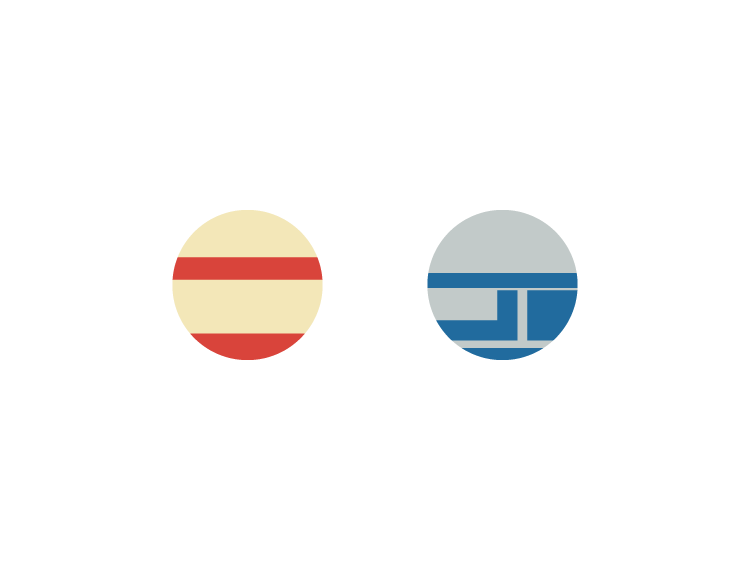

鳥取＊busmap
個人制作バス路線図公開中
サイト更新情報
鳥取＊busmap2018年版 制作中
(a)公立鳥取環境大学にて2018年版を展示予定
- [日付]2018年10月20日,21日(土曜,日曜)
- [場所]公立鳥取環境大学 メディアセンター(図書館)前の廊下
- [時刻]両日とも、環謝祭(大学祭)開催時間中、常時
- [名義]大学祭展示企画"鳥取＊busmap
- [詳細]JR鳥取駅南口から臨時シャトルバスで約20分
- [注意]制作者本人は展示エリアに常駐していません
- ※時間帯によっては皆様からご意見を賜る可能性があります
(b)10月下旬に本webでも2018年版を公開予定
公開日未定
2018年版での内容変更点
- 鳥取県東部地区の主要2社を、21エリアに分け、地図ベースで原則全線全停留所明記
- 印刷すると道路地図風に持ち運べるようデザイン変更
- "片側にポールがない両方向乗降バス停"を実態調査し全域で反映(一部を除く)
今後の新規公開や修正からはCreative Commons BY 4.0へ予定
連絡は@busroutemapまで(mstdn.sanin.link, twitter)